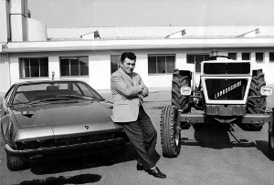
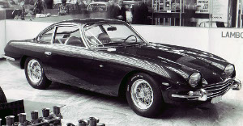
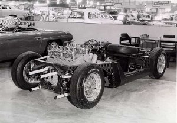
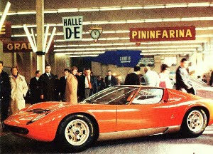
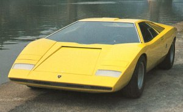
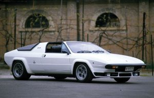
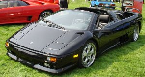
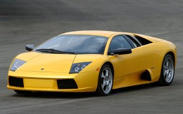
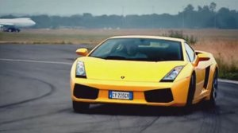

A boy was born on a farm in a rural town near Modena. His name was Ferruccio Lamborghini and like almost all the awesome things, it all started with the man and the idea.
The Evolution
Of
Lamborghini
Important milestones in its history
A boy was born on a farm in a rural town near Modena. His name was Ferruccio Lamborghini and like almost all the awesome things, it all started with the man and the idea.
By then, Ferruccio was the owner of two very successful companies, Lamborghini Trattori, one of the biggest tractor manufacturers in Italy and
Bruciatori, which manufactured heating and air-conditioning machinery. Because of his healthy obsession with cars, he had a small
collection of Ferraris. But they failed to satisfy him. He found that their clutches were weak.
When he met Enzo Ferrari, the founder of Ferrari, to suggest some improvements, Enzo Ferrari responded by saying
"Lamborghini, you may be able to drive a tractor but you will never be able to handle a Ferrari Properly." This is the point
when Ferruccio decided to start his own company of luxury sports cars. Well, you know what they say, "Insult is the mother of Invention."
Automobili Lamborghini was established in Sant'Agata Bolognese, Italy in May and was officially incorporated in October. Work began on making their first model, the 350 GTV. It was ready in four months and was presented at the Turin Motor Show. It was a 2-door rear wheel drive with a front-placed 3464 CC V12 engine.
Production of the 350 GT started. It's success in the market turned Lamborghini into a viable competitor with Ferrari. Later, production of the 400 GT, successor to the 350 GT, also began.
350 GT
Prototypes like the 3500 GTZ, 350 Spyder and the Monza 400 were built. Meanwhile, Lamborghini's three top engineers were working on another prototype in spare time. It was called the P400, a road car with racing pedigree, with the 400 GT's 4 litre 12 cylinder engine transversely mounted behind the cockpit. It's chasis was displayed at the Turin Auto Show in october.
P400's chassis at the Turin Auto Show
After 4 months of intense hardwork, the chasis was now complete with a body designed by Marcello Gondini. The car was showcased at the Geneva Motor Show in Febrauary as Miura, renamed after a breed of powerful spanish fighting bulls. It was a sure hit and amazed everyone.
Miura first presented to the world
The flood of orders for the Miura pumped in cash and elevated the company's fame even further, allowing Lamborghini to go ahead and awe people with more new models.
The Istero GT was introduced to the world in March.
It was packed with a 300 hp engine, highly comfortable and well-finished interior and had a hefty price tag.
It was the successor to the 400 GT and had modest sales.
In this same year, the Espada was also launched. With a revolutionary new and original design, it received
countless orders and Lamborghini was firmly established in the automobile industry.
Espada
The cars in Lamborghini's production line underwent some major modifications by that time and production of the Istero GT had stopped.
Also, 228 Espadas were sold which is an outstanding figure considering how expensive the Espada was.
Lamborghini launched the Jarama, a 2+2 seater that was an 'in-between' model of the four-seat Espada and the two-seat Miura. However, when showcased at the Geveva Motor Show it failed to make the right impression on car buffs.
By this time, around the world Lamborghini was considered a symbol of excess, fierce and extra-ordinary automobiles. But, when it built reasonable and almost normal cars, it did not respond to these criteria and did not achieve the desired success.
As a result, Lamborghini put forth a radically new and different model the next time. It was the P250 Urraco. It generated immense excitement among the public and orders flowed in. To produce this car, the Lamborghini factory was expanded, thus adding nearly 500 square metres of production space.
Urraco
Lamborghini put forth two more new models, the Jota and the Countach. In the meantime, labour unions' unrest in that period created a very difficult situation in factories, especially in northern Italy. This became intolerable for Lamborghini.
Countach
Ferruccio Lamborghini sold his majority stake to the Swiss Georges-Henri Rossetti and the following year, he sold his remaining shares to a friend, Rene Leimer. Thus, the company founder, the man who had been the driving force behind its extraordinary, vital explosion during the first eight years, left the scene for good.
However, the company continued to work at its regular pace and the P250 Urraco, the 400 GT Jarama, the 400 GT Espada and the P400 Miura SV were in full production. Some of these models received important modifications, especially the Espada. It gave the company the success it needed and an outstanding 1226 units of this new series of Espada were produced.
The oil crisis sparked by the 1973 Arab-Israeli War created a climate of fear about petrol supplies. As a result, the big, fuel-guzzling super sports cars rapidly became passé. The gradually deteriorating social situation and the drop in sales made it necessary to streamline the production range.
Lamborghini's next model, the Silhouette, presented at the Geneva Motor Show in 1976, was an aggressive model with an unmistakable appearance. The commercial and production difficulties were complicating the life of the company and Lamborghini signed a contract with BMW Motorsport that envisaged the design and subsequent production of a super sports car although the contract later evaporated due to several technical, legal and financial problems.
Silhouette
The Urraco, the Silhouette and the Espada were no longer being produced. Only the S version of the Countach was still in production and it allowed the company to survive the shrinking business.
Lamborghini presented the Athon, a car that was completely open and had no roof whatsoever, but there was no follow-up to it. The company slid toward bankruptcy and then liquidation. Lamborghini was considered finished.
As soon as it was put up for liquidation, it had a number of admirers lined up to take it over. The judge entrusted the company to two brothers, Jean Claude and Patrick Mimran, the wealthy owners of a sugar empire in Senegal and, naturally, sports car lovers. From that moment, work was seriously underway again.
In March, at the Geneva Motor Show, further modified versions of the Miura, the Countach and the new Jalpa were showcased. This was followed by good sales of both the Countach and the Jalpa, reviving the company back into a firmly established state once again.
Jalpa
On 23 April , Lamborghini was taken over by the US Chrysler company. The American owners quickly settled in at Sant'Agata and a period of intense activity began.
The Countach's successor was presented. It was named Diablo, after a particularly fierce fighting bull of the nineteenth century, and it proved to be up to expectations. The Countach's follower could not be a conventional car, of course, and it had to be extreme, spectacular, forceful and uncommon. The Diablo, with its 492 hp generated by a 5.7-litre V12, was all this and more. It was also the fastest car on the streets when it was launched.
Diablo
Although sales sky-rocketed after tha launch of the Diablo, the $239,000 car proved too much for US car enthusiasts and Lamborghini soon found itself on the verge of collapsing. So, Chrysler sold the company to Mega Tech which was backed by Indonesian bussinessmen.
Yet again, another financial crisis set the stage for a new ownership change – Ferdinand Piëch, chairman of Volkswagen and grandson of Porsche’s founder, Ferdinand Porsche, commanded the VW subsidiary Audi AG to acquire Lamborghini in September.
The first major innovation came with the successor to the Diablo: the Murciélago. It is almost superfluous to point out that this new model was also named after a famous, fierce fighting bull. Sales immediately went well, and Lamborghini could count on selling each one it makes, as these cars were reserved by customers well in advance.
Murceilago
Equipped with a 500-hp 50-valves V10 engine, permanent four-wheel drive and a top speed of well over 300 km/h, another new car was launched with the name of a fighting bull's breed, the Gallardo. It is the synthesis of a true sports car that can be used on an every day basis.
Gallardo
You probably already know what Lamborghini brought out in these recent years. The present-day models like Reventon(2008), Aventador(2011), Veveno(2013), Huracan(2014) etc were unveiled. Some of them have already hit the market while some are yet to receive full-scale major production. Today, Automobili Lamborghini is one of the top guns in the sports car industry and I really doubt there is even a single guy alive who doesn't love this Italian born monster maker. Only a few own a Lamborghini. The rest dream of owning one.
"When you stop working, you start to die." - Ferruccio Lamborghini